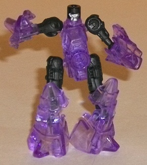
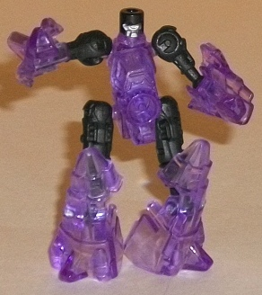
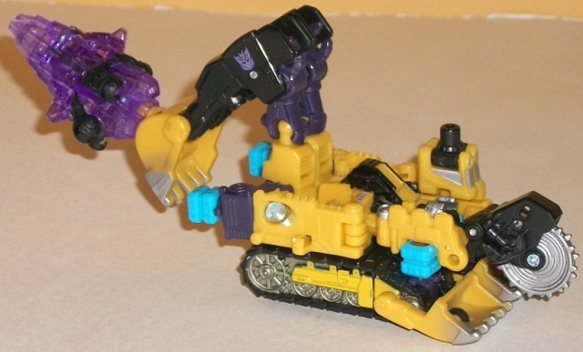
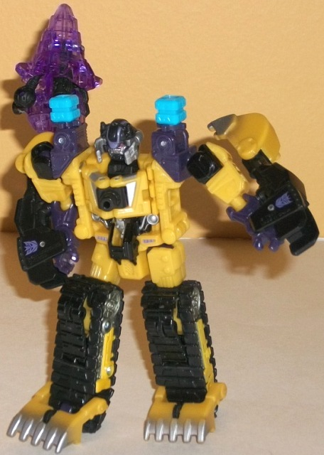
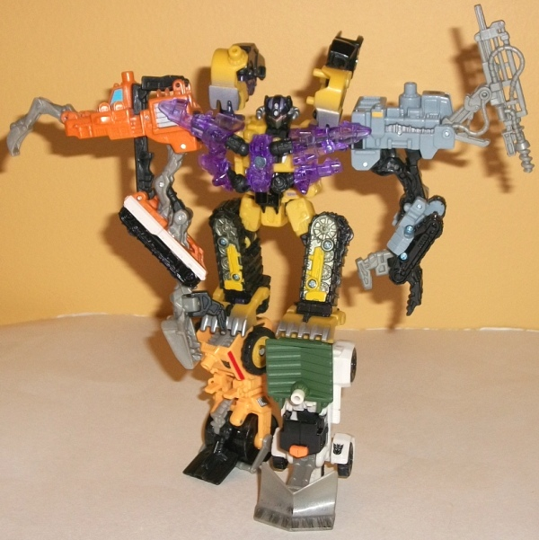

Throttler
Throttler

Allegiance : Minicon
Difficulty of Transformation : Very Easy
Color Scheme : Black, transparent light purple, and some silver
Individual Rating : 4.8
Sledge
w/ Throttler
Throttler

Allegiance
: Minicon
Difficulty of Transformation
: Very
Easy
Color Scheme
: Black, transparent
light purple, and some silver
Individual Rating
: 4.8
Unlike most Power Core
Minicons, you can tell what Throttler's weapon mode is pretty easily from
his robot mode. One can see all the bits of "drill" that make up his legs
and arms. They serve decently enough as those appendages, but given the
odd shape of them-- the angled, elongated feet, the large pointy kneecaps,
and the hands molded into the sides of pieces that are essentially triangles--
it's clear forming a robot was secondary for this toy. In addition to one
in his stomach, his head is also a Powerlinx peg, and thus looks a bit
dopey because of its shape. There is some mold detailing on the face, but
I can't quite make out if he's supposed to have a visor or just one large
eye-- it's kinda some weird clashy detail, there. It should also be noted
that Throttler's face is the only place where there's any paint detailing
on him whatsoever. I understand you don't want a lot of paint on these
guys because of the whole "transparent" gimmick, but at least another one
or two certainly wouldn't have hurt-- his black and transparent purple
color scheme is otherwise rather a bit dull and unremarkable (the purple
is a bit overly light and washed-out, so under strong light it doesn't
pop enough). However, the good news about Throttler's robot mode is that
it's fairly stable, and has pretty good posability for such a small figure--he
can move at hte shoulders, elbows, hips, and knees (at two points). Most
of these joints are ball joints, which of course makes them even better
when it comes to maneuverability.
Throttler's weapon mode
is the same whether he's being attached to a Transformer in robot or vehicle
mode-- they're both a drill. There's a peg at one end of the drill (in
his robot stomach) that you use in most interfaces with other Powerlinx-enabled
Transformers, and thankfully, the drill CAN rotate, but not quite where'd
you expect-- the body is actually cut down the center so the "belly" of
Throttler is a different piece than the back (where the ball joints and
head are attached to). The point of rotation is where the "belly" meets
the back piece of the toy, so the whole toy except the belly rotates around
if you want to move him like that. Given that you can easily see the tips
of his appendages, as well as his head, in this mode, that's a bit less
than ideal, as it makes it just that more obvious that everything doesn't
tuck in completely into the drill part of his weapon modes. The point of
rotation is also a bit off-center. Given that his head is also a Powerlinx
peg, you can plug him into Powerlinx ports on Transformers (or appropriately-sized
fists) that way, but if you do, the drill can't rotate, which is kind of
what it NEEDS to do if you want it to be a weapon...
Like most Power Core
Minicons, Throttler's "chest armor" mode is an afterthought at best. It's
his robot mode upside down, using the stomach port to Powerlink to the
larger toy and then pointing his appendages updwards. It doesn't even come
close to looking like anything BUT an upside-down robot, though I suppose
if I really try hard to find something positive about this mode I guess
I can say the "spikes" formed by his feet look decent coming up above the
shoulders of some of the PCCs, if they have a Powerlinx port on their chest
in one or both of their robot modes. Otherwise, eeennnhh.
Throttler was an interesting
idea, what with having a robot transform into a drill and nothing but a
drill, but in execution it fails in most respects. His robot mode has some
odd pieces (and a dorky head) because of his design, and in drill mode
his upper legs, arms, and head stick out blatantly, though at least it
rotates in one of its configurations. The less said about his "armor mode"
the better. Definitely a worse-than-average Power Core Minicon.
 Sledge
Sledge



Allegiance
: Decepticon
Difficulty of Vehicle/Robot Transformation
:
Easy
Difficulty of Torso Transformation
:
Very Easy
Color Scheme
: Black, dull mustard
yellow, and some light sky blue, dark pale purple, silver, and red
Individual Rating
: 7.1
Sledge's vehicle mode
is some kind of construction vehicle. I say "some kind" because it's got
all the necessary details for a construction vehicle-- shovels at the front,
treads, a mostly yellow-and-black coloration, a shovel-arm at the rear,
a sawblade... but the main body of the figure is just plain poor. There's
little attempt to hide the robot mode bits in this mode-- his waist, head,
and hands are all quite blantant in this mode when looked at from the top.
The combiner pegs also stick out at angles that look particularly awkward,
such as right behind the front shovels and then sticking out the back end
to get in the way of the shovel arm movement a little. The parts that ARE
dedicated to the "construction vehicle" parts of Sledge look quite good,
however, and there's tons of mold detailing, particularly on the treads.
The sawblade can move up and down at the point where it connects to the
main body, and the blade itself can rotate in place to boot. The shovel
arm can move at three points as well, so you can get a fair amount of "scooping
action" out of it, even though as mentioned before, the combiner pegs interfere
a little bit with that movement. His cockpit is the only weak point as
far as the "vehicle parts" go, with it being too skinny proportionally
and very simplisticly detailed in comparison to the rest of the figure.
As for the color scheme, the dull purple helps to diversify things from
the fairly straightforward yellow, silver, and black color scheme, but
it's not used so much where it makes the construction vehicle look funky.
That said, it's still not the most exciting color scheme, probably because
of how dull all the colors are (except the sky blue on the combiner pegs).
There's also an adequate amount of paint detailing to break up the yellow
and keep the toy from looking too monotone (particularly on the robot waist
and treads), and there's a nice "worn metal" silver fade paint app on the
shovel-arm.
Sledge's robot mode
is definitely where the emphasis went for his "basic two" modes, as nearly
all of the vehicle parts fit in quite well with his overall silouhette.
(The sole exceptions to this rule are the lower halves of the shovel arms,
which fold rather obviously against his robot arms. At least they peg into
place and don't flop around or anything.) Sledge's general appearance in
this mode is of a stocky, somewhat short foreman, and looks great as a
Decepticon soldier. The detailing on his robot mode parts-- while not quite
as good as that on his vehicle parts-- is still pretty nice, and his face
sculpt is one of the few "normal robot" faces in the Power Core Combiners
line that I quite like, fitting his worker/builder look quite well, with
the purple detailing on his forehead looking a bit like a construction
helmet. Sledge's chest is quite well-done, with the vehicle cockpit folding
over the circular saw to basically make it look pretty solid. Sledge's
combiner ports are also used to good effect in this mode, either sticking
up out of his shoulders and out of the way or serving as heels to his rather
large shovel-feet. As for articulation, Sledge can move at the neck, shoulders
(at two points), elbows, hips, knees (at two points), and a bit at the
ankles. Although I like his leg design in general, I do wish he had "real"
knees instead of his treads just coming apart a little to allow movement
there-- it doesn't look quite right.
The transformation to
Sledge's combiner torso mode is very basic, but also very effective. His
legs fold in on themselves a little bit at the knees and the combiner pegs
flip out to form his combiner upper legs, making for effective upper legs
without a "regular robot" knee joint that's TOO obvious, and the shovel-feet
serve as decent kneecaps. Meanwhile, his arms rotate on a hinge to let
their own combiner pegs point outwards. For the head, you literally just
turn it around and flip the faceplate cover halves, thus covering up Sledge's
"basic" robot face and revealing his "combiner" one. This one's a very
nice head sculpt as well, taking the same basic shape but making it look
more "evil" with the spikes on the side, the red visor, and the angular
faceplate. The chest remains completely unchanged from robot mode, which,
while simple, also makes this and his regular robot mode look a bit too
same-ish. (The shovel arms are also the only things that stick out blatantly
in this mode as well, just hanging off his upper shoulders.) For articulation,
in this mode Sledge can move at the neck, shoulders (at two points), hips,
and knees (at three points), which is slightly above-average for a Power
Core Combiner.
Sledge's vehicle mode
is pretty poor and honestly one of the worst alt-modes of the Power Core
Combiner line, but his robot and torso mode are both quite good, with the
shovel-arm kibble being the only real exception to that rule. That said,
I do wish the latter two modes were a bit more different, the transformation
being not much more than a head rotation and an arm swivel. Still, he's
a below-average toy for the line due to just how bad and kibble-ridden
his vehicle mode is.
Reviews by Beastbot